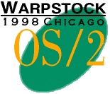

Some of my favorite links:

| Supporting Warpstock 2007 |
| Supporting Warpstock 2006 |
| Supporting Warpstock 2005 |
|
|
| Supporting Warpstock 2004 |
| Supporting Warpstock 2003 |
| Supporting Warpstock 2002 |
| Supporting Warpstock 2001 |
| Supporting Warpstock 2000 |
| Supporting Warpstock 1999 |
|  |
| Supporting Warpstock 1998 |
50 Grace Lane
Stoughton, MA 02072-
(781) 344-0729 (voice / fax)
TonyKoker@bigfoot.com (e-mail)
Best Friends Information Business (BFIB) (Our company web site)
Best Friends Information Business (BFIB) (e-mail)
LARK Ventures, Inc. (Our company web site)
LARK Ventures, Inc. (e-mail)

Copyright © 1998-2025 LARK Ventures, Inc. All Rights Reserved.